Assets Maestro · Admin platform · Dec 2024 – Dec 2025
Assets Maestro is an AI and IoT-powered SaaS platform for field service and asset monitoring. It connects manufacturers, service providers and customers through separate Service, Customer, Contract and Asset Monitoring portals. I designed the layer that holds them together: tenant management, a unified admin hub, secure sign-in, permissions, integrations and the design system behind it all.
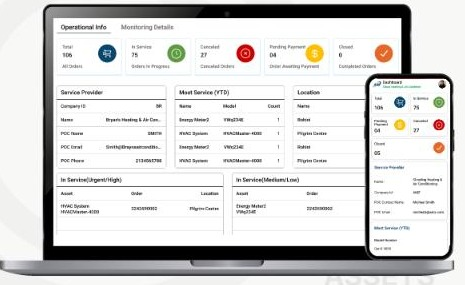
The problem
The service, contract and vendor tools had been built separately, so users jumped between websites and logins to manage a single asset. Managers couldn't see the whole business, and data moved between systems by hand.
Users moved between portals and tools to manage one asset.
Every sub-portal had its own credentials and no shared security.
Data sat in separate modules, so managers couldn't see overall performance.
Data was copied by hand between systems like Salesforce and Oracle, causing frequent mistakes.
Service, contract and vendor tools were separate websites with different patterns.
Third-party connections broke data sync and slowed the whole system.
What I owned
A central admin hub that brings the Customer, Service, Contract and Vendor portals into one workspace.
A permission matrix that lets admins grant View, Add, Edit and Delete rights by role.
Organisation-wide settings for branding, date and time formats, and integrations.
A report designer that guides users through choosing data sources and filters in seven steps.
Working with cross-functional teams to define requirements across every portal.
Testing designs and iterating on what users found hard.
Process
Defined business goals and constraints with stakeholders.
Compared Asset Panda, UpKeep and IBM Maximo, and gathered insights.
Brainstormed solutions with cross-functional teams.
High-fidelity designs and prototypes in Figma.
Usability testing, then refinements based on feedback.
Users of the leading tools complain about the same few things. Each one shaped a decision in Assets Maestro.
| Tool | What users report | What I designed instead |
|---|---|---|
| IBM Maximo | Complexity is the most common complaint: a steep learning curve and an interface reviewers call "clunky". One team wrote a 45-page quick-start guide. | A single hub where each portal is a labelled card with a one-line purpose, and one design system so every portal works the same way. |
| IBM Maximo | Custom integrations are expensive to build and maintain. | Ready-made ERP and CRM connectors (Salesforce, Microsoft Dynamics, Oracle) that connect from settings in one step. |
| UpKeep | A "lack of custom security options". | A two-layer permission matrix: custom roles with portal access and action rights set separately. |
| UpKeep, Asset Panda | Reports are hard to build. Asset Panda reviewers call them "complicated". | A report designer that guides users through data sources and filters in seven steps. |
Complaints are drawn from public reviews on G2, Capterra and SelectHub (2025–2026).
Architecture
Agelix configures each customer company (a tenant) from a root portal. Everyone signs in through one screen with two-factor verification by email or phone. Admins, coordinators, technicians and service-desk staff then land on a dashboard and reach only the portals their role allows: Admin, Asset Registry, Customer, Service and Contract.
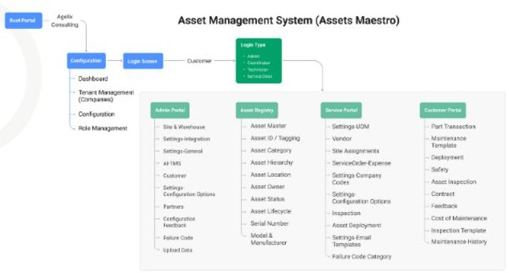
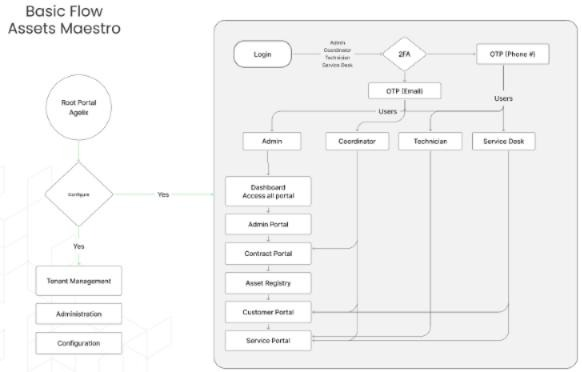
Security
A single multi-factor sign-in replaced the separate logins. After the password, users verify with a six-digit code sent to their email or phone.
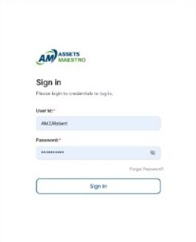
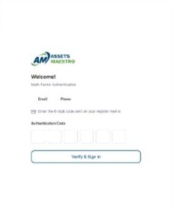
Root portal
Agelix runs the platform for many companies. The root portal shows tenants with their status and type (service provider or customer), and each tenant's page holds general details, contacts, admin info and subscription limits such as plan, user limit and asset limit.
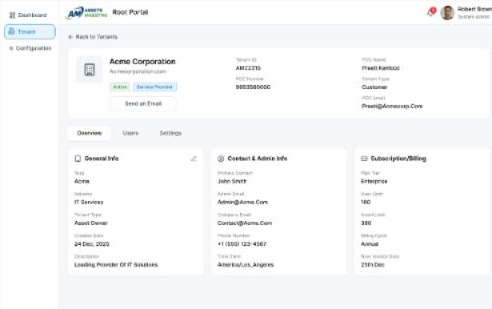
Partner onboarding
Service providers bring their customers and partners onto the platform by invitation. From Partner Management they add the company, its service type and a primary contact, with an optional secondary contact, and send an invite. The invited contact gets a registration page with the company and email already filled in, so they only choose a user ID and password.
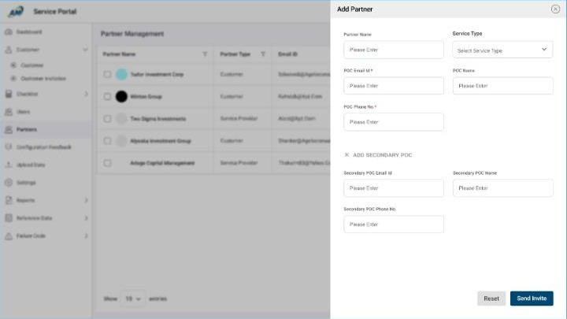
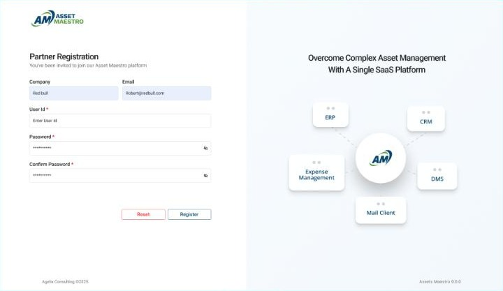
Unified admin hub
After sign-in, users choose where to work from one hub: Asset Registry, Customer, Service, Vendor, Admin and Contract portals, plus Reports and User Management. Each card says what the portal is for, so new staff don't need to know the system's history to find their way.
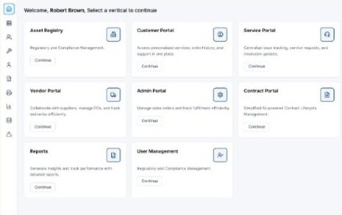
Integrations
Settings group integrations by type: ERP (Microsoft Dynamics 365, Oracle Fusion Cloud ERP, Infor CloudSuite) and CRM (Salesforce, Microsoft Dynamics 365 Sales, HubSpot). Each connects in one step, with a clear connecting state, so admins know what's syncing.
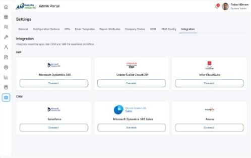
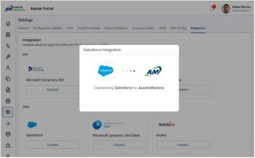
People and permissions
User management lists everyone with department, role and location, filterable by department and role. Adding a user captures company, reporting manager, resource group and skills. Access is set through a permission matrix of View, Add, Edit and Delete rights per role.
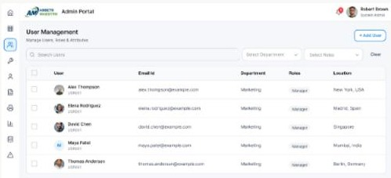
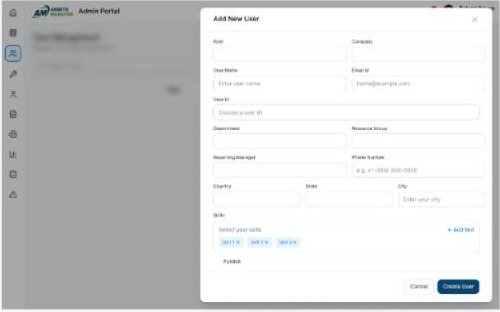
Permission matrix
Permissions work in two layers. The first decides where a role can go: which portals it can open, such as Asset Registry, Customer, Service, Contract and Vendor. The second decides what it can do there: View, Add, Edit, Delete or Manage Roles. Keeping the layers separate means an admin can give a coordinator the Customer Portal without also giving them the right to delete records.
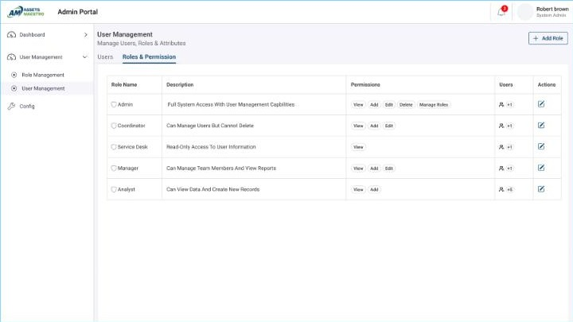
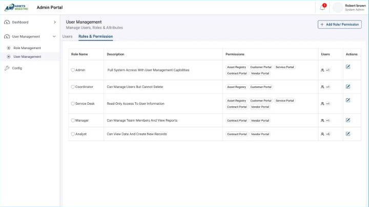
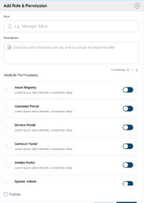
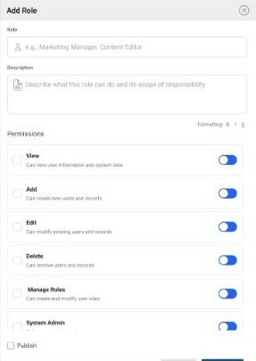
Design system
To make separate portals feel like one product, I built a shared foundation: a colour palette, a five-step type scale from 30 px headings to 14 px small text, a 12-column grid with a 16 px gap, a 4–48 px spacing scale, an icon set, and components for inputs, buttons, cards, navigation, toggles and dashboard stats.
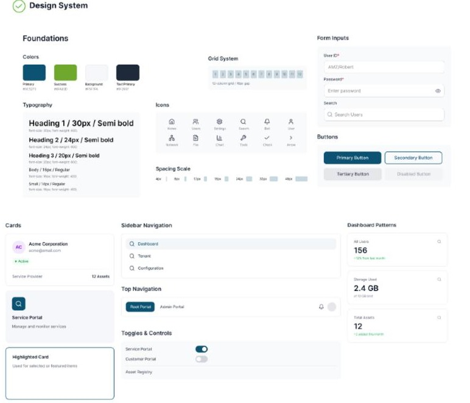
Impact
Taken from design to a full production release.
Active users, managing thousands of assets in one system.
Among the enterprise customers that subscribed.
A single MFA sign-in with role-based permissions replaced separate portal logins.
Real-time syncing with Salesforce, Oracle and Microsoft Dynamics replaced manual data entry.
Managers see operational efficiency and customer satisfaction on live dashboards.
Asset and contract management now run end to end in one platform.
Related work
Two more case studies go deeper into the Service Portal of this platform.